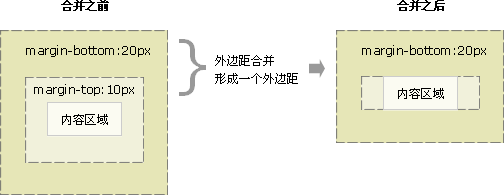
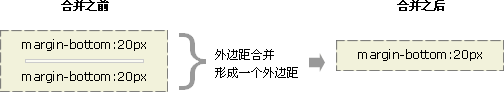
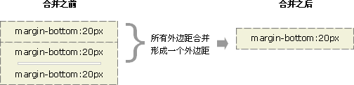

CSS 外边距合并
外边距合并指的是，当两个垂直外边距相遇时，它们将形成一个外边距。
合并后的外边距的高度等于两个发生合并的外边距的高度中的较大者。
外边距合并
外边距合并 (叠加）是一个相当简单的概念。但是，在实践中对网页进行布局是，它会造成许多混淆。
简单地说，外边距合并指的是，当两个垂直外边距相遇时，它们将形成一个外边距。合并后的外边距的高度等于两个发生合并的外边距的高度中的较大者。
当一个元素出现在另一个元素上面时，第一个元素的下外边距与第二个元素的上外边距会发生合并。请看下图：

当一个元素包含在另一个元素中时 (假设没有内边距或边框把外边距分隔开），它们的上和/或下外边距也会发生合并。请看下图：
尽管看上去有些奇怪，但是外边距甚至可以与自身发生合并。
假设有一个空元素，它有外边距，但是没有边框或填充。在这种情况下，上外边距与下外边距就碰到了一起，它们会发生合并：
如果这个外边距遇到另一个元素的外边距，它还会发生合并：
这就是一系列的段落元素占用空间非常小的原因，因为它们的所有外边距都合并到一起，形成了一个小的外边距。
外边距合并初看上去可能有点奇怪，但是实际上，它是有意义的。以由几个段落组成的典型文本页面为例。第一个段落上面的空间等于段落的上外边距。如果没有外边距合并，后续所有段落之间的外边距都将是相邻上外边距和下外边距的和。这意味着段落之间的空间是页面顶部的两倍。如果发生外边距合并，段落之间的上外边距和下外边距就合并在一起，这样各处的距离就一致了。

注释：只有普通文档流中块框的垂直外边距才会发生外边距合并。行内框、浮动框或绝对定位之间的外边距不会合并。